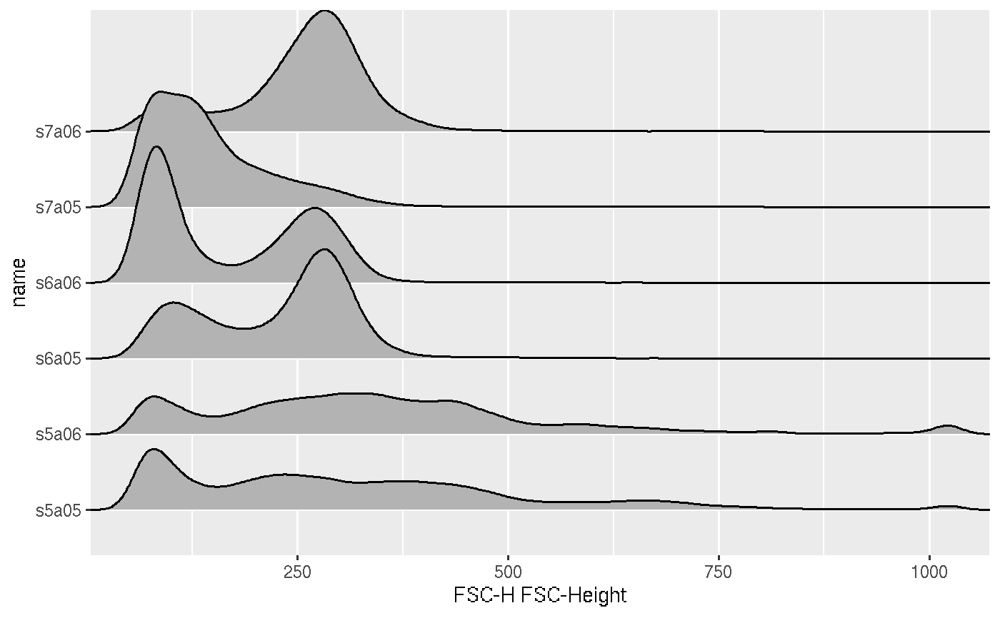
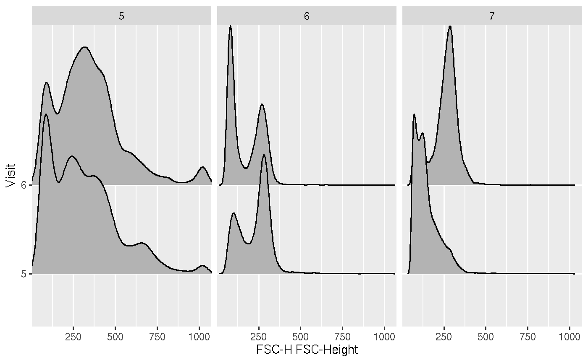

Create a new ggcyto plot from a flowSet
# S3 method for flowSet ggcyto(data, mapping, filter = NULL, max_nrow_to_plot = 50000, ...) # S3 method for ncdfFlowList ggcyto(data, ...)
Arguments
| data | default flowSet for plot |
|---|---|
| mapping | default list of aesthetic mappings (these can be colour, size, shape, line type -- see individual geom functions for more details) |
| filter | a flowcore gate object or a function that takes flowSet and channels as input and returns a data-dependent flowcore gate The gate is used to filter the flow data before it is plotted. |
| max_nrow_to_plot | the maximum number of cells to be plotted. When the actual data exceeds it, The subsampling process will be triggered to speed up plotting. Default is 2e5.To turn off the subsampling, simply set it to a large enough number or Inf |
| ... | ignored |
Value
a ggcyto_GatingSet object which is a subclass of ggcyto class.
Examples
data(GvHD) fs <- GvHD[subset(pData(GvHD), Patient %in%5:7 & Visit %in% c(5:6))[["name"]]] # 1d histogram/densityplot p <- ggcyto(fs, aes(x = `FSC-H`)) #facet_wrap(~name)` is used automatically p1 <- p + geom_histogram() p1#>#overwriting the default faceeting p1 + facet_grid(Patient~Visit)#>#display density p + geom_density()#>#> #>#> #> #>#stack by fcs file ('name') p + geom_density_ridges(aes(y = name)) + facet_null() #facet_null is used to remove the default facet_wrap (by 'name' column)#>#or to stack by Visit and facet by patient p + geom_density_ridges(aes(y = Visit)) + facet_grid(~Patient)#>#>#># 2d scatter/dot plot p <- ggcyto(fs, aes(x = `FSC-H`, y = `SSC-H`)) p <- p + geom_hex(bins = 128) p